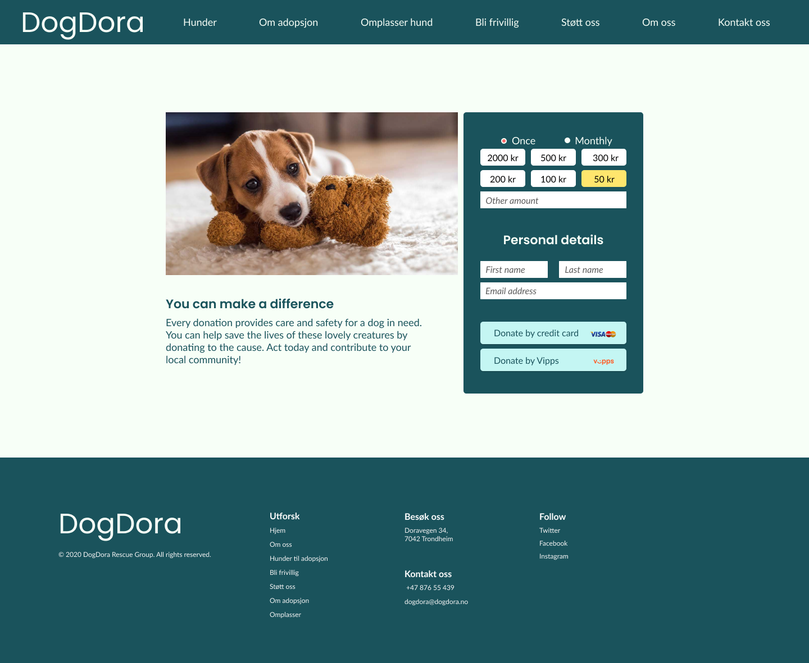

DogDora
Gard Schei Høstmælingen, Stina Sofie Møller, Stian Forseth, Anita Stuberg Guldseth and Emil Brevik
September 11th, 2020
Link til nettsideAdministrative details
Our client: DogDora
Our contact person: Fido Langbein
Fido Langbein is the owner of DogDora, and will be our contact person through the entire process of making the website.
Purpose and goals
DogDoras mål er å gi hunder i Trøndelag et godt hjem og gi folk mulighet til å biddra til hunders velvære gjennom frivillig arbeid og donasjoner. Målgruppen til Dogdora er mennesker som vil adoptere eller omplassere hunder og folk som vil bidra med donasjoner eller frivillig arbeid.
Navigation structure
DogDoras hjemmeside har en hierarkisk navigasjonsstruktur. Hovedsidene er tilgjengelige via en global navigasjonsbar, som gjør at det er lett å navigere mellom de forskjellige kategoriene på siden avhengig av hvilket mål man har. Dette gjør navigasjonen lett for brukeren, og skaper en mental modell som er lett å følge.
Noen av hovedsidene, eks. hunder.html vil også ha konkrete undersider for hver hund, som kun er tilgjengelige via den konkrete siden. For å skape god flyt på siden, har vi også linket direkte mellom noen sider, eks. hunder.html og om_adopsjon.html. Dette er vist på figur 1.

Page Layout and Appearance
Fonts:H1: Poppins, regular 50px
H2: Poppins, semibold 34px
H3: Poppins, semibold 22px
Body: Lato, regular 18px
Caption: Lato, regular 16px
- Bakgrunn: #F7FFF7
- Mørk blå: #1A535C
- Lys blå: #C4F6F3
- Gul: #FFE66D
- Rød: #FF6B6B
- Svart: #000000
- Hvit: #FFFFFF
Teksten vil være svart, hvit eller mørk blå. Dette avhenger av hvilken farge bakgrunnen har, eller om vi vil skille overskriften fra brødteksten.
Navbar:Navigasjonsmenyen vil være plassert på toppen av siden. Bakgrunnen vil være mørk blå (#1A535C), mens tekst og logo vil være hvit. På venstre side vil logoen være. Logoen vil være en lenke som fører til landingssiden. Lenken til den nåværende siden vil bli uthevet og teksten vil få en strek under seg. Når man holder musepekeren over en lenke vil teksten bli uthevet og bli lys blå (#C4F6F3).
Footer:Footer er plassert nederst på siden og vil inneholde de samme lenkene som navigasjonsmenyen. Det vil også være kontaktinformasjon til hundesenteret samt lenker til sosiale medier. Venstre side i footeren vil inneholde logoen.
Body width:100%. Innholdet vil bli tilpasset etter brukerens skjermstørrelse.
Margin:Det meste av innholdet vil ha en margin på ca. 10% (dette avhenger av skjermstørrelsen). På små skjermer vil marginene være mye mindre. Navigasjonsmenyen og footeren vil strekke seg over hele skjermen uavhengig av størrelse.
Barebones example:Content
LandingssideLandingssiden har en navigasjonsbar øverst som er konsistent over alle sidene på nettsiden for enkel navigasjon. Deretter er det nyheter som er viktig for de besøkende å se med en gang med et appellerende bilde til. Så er det tre CTA som fører brukeren til den siden som er relevant for dem. Vi har gjort det på denne måten fordi vi har identifisert tre brukere: De som adopterer, de som vil omplassere og de som vil bidra. For at de raskt skal komme til sin del av nettsiden er det det første som møter dem slik at brukere ikke faller av ved å lete etter den delen av siden de skal til. Scroller man ned kommer man til noen utvalgte historier og en artikkelfeed. Målet med denne siden er å gi relevant informasjon om brukeren ønsker å se mer om hvordan hundene får det etter de har blitt adoptert, og bygge tillit til DogDora som tjeneste. Gjennom relevante artikler og tips til hundeeiere viser DogDora et større ansvar og engasjement, som bygger denne tilliten hos brukeren.
FrivilligØverst på siden er den samme navigasjonslinjen som vi har brukt på de fleste andre sidene. Det er så et stort bilde som fyller siden fra navigasjonslinjen og helt til bunnen av skjermen. Sentrert, over bildet er det et skjema som man kan fylle ut for å melde seg opp som frivillig. Dette skjema vil tilfredsstille målet om å gi folk muligheten til å bidra til organisasjonen. Over skjemaet står overskriften “Frivillig”. I midten nede mot bunnen av skjermen er det en pil med skriften “les mer” over. Trykker man på denne scroller man nedover til et par avsnitt om hvordan og hva det vil si å melde seg som frivillig. Man kan også navigere til hit ved å scrolle.
Doner
Også på denne siden er den samme navigasjonslinjen på toppen av skjermen. Denne siden er det ikke mulig å scrolle på. På midten av skjermen er det tre bokser. Boksen som er øverst til venstre inneholder et bilde av en hund. Boksen under bildet er fylt med litt tekst om hva en donasjon vil bety for hundene. Den tredje boksen som fyller hele høyre delen inneholder et skjema som man kan fylle ut for å sende en donasjon. Her velger man et beløp, fyller inn personlig informasjon og velger betalingsmåte. Ved å gjøre det mulig å donere til organisasjonen ved bare noen få klikk tilfredsstilles målet om å gi folk muligheten til å bidra til organisasjonen.
 Hunder til adopsjonI likhet med de andre sidene har også denne den samme navigasjonslinjen øverst. Dette er siden hvor brukeren ønsker å få oversikt over hunder som ligger ute til adopsjon. De tilgjengelige hundene blir framstilt med et likt oppsett bestående av et bilde, navn og en kort setning. Under den lille teksten er det en “les mer”-knapp for at man skal kunne lese mer om hver hund. Ved å trykke på “les mer” vil det dukke opp en modal. Øverst på denne vil det være en bildekarusell. Dette er for å fremheve hunden visuelt og markedsføre hunden fra sin beste side. Videre vil navn og den samme korte setningen stå. Så vil det være en visualisering av ulike egenskaper slik at brukeren raskere får et inntrykk av hundens personlighet. Under dette vil det være en mer utfyllende og detaljert beskrivelse av hunden, hvilke behov den har og andre tilpasninger. Nederst på denne modalen er det være et kontaktskjema. Dersom brukeren synes dette er en potensiell hund har man mulighet til å melde sin interesse slik at det kan bli avtalt et tidspunkt hvor man kan komme å møte hunden. Samtidig fyller man inn navn, mailadresse og gir en beskrivelse av sin livsstil, boforhold, tidligere erfaringer og hva man kan tilby hunden. På denne måten kan organisasjonen også avgjøre om dette vil være en god match. På siden “Hunder til adopsjon” er det et fixed filter hvor brukeren kan spesifisere sitt søk. Det er også mulig å søke etter navn eller ord som finnes i hver beskrivelse av hunden. Dette kan være til hjelp dersom det er en spesifikk hund man er på jakt etter, viktige egenskaper hunden bør ha, eller gi en hurtigere navigering tilbake til en hund man har sett på tidligere.
Om adopsjonOm adopsjon-siden skal gi grunnleggende informasjon som er viktig å vite før man setter i gang med en adopsjonsprosess. Først står det en oppsummering av generell info, under der er det en button hvor man kan trykke for å laste ned en checkliste for ting man bør gå gjennom / tenke over før en adopsjon. Under denne er det en Q&A-seksjon hvor de mest populære/viktigste spørsmålene er oppsummert.
OmplasseringHer finner man først en liste med steg for hvordan omplasseringsprosessen fungerer. For å ikke overvelde leseren med for mye info med en gang, er disse formet som dropdowns man kan åpne etterhvert som man beveger seg nedover. Etter listen kommer det et skjema hvor man kan fylle inn kontaktinfo hvis man ønsker å sette i gang en prosess for å omplassere egen hund.
KontaktPå denne siden vil man finne kontaktinformasjonen til DogDora samt åpningstider og adresse. Kontaktinformasjonen er da telefonnummer og e-postadresse. Her har vi valgt å ha universelle ikoner i stedet for tittel på de tre punktene. Brukeren slipper da å lese ekstra informasjon, og kan lett finne frem til riktig info. Adressen vil også vises på et kart som er koblet opp mot Google Maps. Dette viser plasseringen til DogDora, og dersom man trykker på kartet kommer man til Google Maps og kan navigere seg frem til adressen. Til høyre ligger åpningstidene til DogDora. Denne siden inneholder ikke mye informasjon, slik at det er lettere å finne det man er ute etter, nemlig kontaktinfo.
Om ossI likhet med de andre sidene har også denne den samme menybaren øverst. Hovedinnholdet på siden er tre avsnitt med diverse infotekst om DogDora, med et tilhørende bilde. Avsnittene holdes korte for å gi litt informasjon til de som vil lese om DogDora, men ikke lange tekster. Avsnittene er annethvert høyre/venstre-stilt for å skape dynamikk.
Minimum requirements
Vi har planlagt at siden skal inneholde disse Javascript-funksjonene:
- Hvis man trykker på “les mer” om en av hundene på “Hunder til adopsjon”-siden skal det åpnes en modal med informasjon om den enkelte hunden. Dersom man trykker utenfor modalen skal modalen lukkes og man returnerer til “Hunder til adopsjon”-siden. Da skal man ikke havne øverst på siden, men returnere til dit man hadde scrollet da man trykket på “les mer”-knappen.
- Filtreringsfunksjon på “Hunder til adopsjon”-siden. Her kan man velge hvilke type hunder som skal vises basert på ulike egenskaper. Hundene som ikke oppfyller kravet til egenskapene bestemt i filteret vil ikke dukke opp på skjermen.
- Ved utfylling av skjemaer skal informasjonen man forsøker å legge inn valideres. For eksempel skal det ikke være mulig å skrive inn bokstaver i et telefonnr-felt. Det skal også gis en feilmelding til brukeren dersom man har fylt inn et felt med informasjon som ikke blir godkjent av valideringen.
- På forsiden skal det være et slideshow med bilder. Bildene skal rullere på et gitt tidsintervall. Det vil også være mulig for brukeren å selv navigere seg gjennom bildene ved å trykke på piler som er midtstilt på hver side av bildet. Sentrert ved bunnen skal det være et ikon som viser hvilket bilde man ser og hvor mange bilder det er totalt.
Plan
Organizational scheme- index.html
- about.html
- contact.html
- adopt.html
- dogs.html
- specificDog.html
- aboutAdoption.html
- volunteer.html
- pledge.html
- images/
- ...
- scripts/
- overlay.js
- filter.js
- formvalidator.js
- slideshow.js
- navbar.js
- footer.js
- styling/
- stylesheet.css
- variables.css
- index.css
- contact.css
- about.css
- adopt.css
- specificDog.css
- aboutAdoption.css
- pledge.css
- volunteer.css
| HTML | CSS | JS | Hvem | Frist |
|---|---|---|---|---|
| index.html | index.css | Gard | 16. oktober | |
| about.html | about.css | Anita | 16. oktober | |
| contact.html | contact.css | Anita | 16. oktober | |
| dogs.html | dogs.css | Stina Sofie | 16. oktober | |
| specificDog.html | specificDog.css | Stina Sofie | 16. oktober | |
| adopt.html | adopt.css | Emil | 16. oktober | |
| aboutAdoption.html | aboutAdoption.css | Emil | 16. oktober | |
| volunteer.html | volunteer.css | Stian | 16. oktober | |
| pledge.html | pledge.css | Stian | 16. oktober | |
| stylesheet.css | Emil | 16. oktober | ||
| variables.css | Stian | 16. oktober | ||
| overlay.js | Emil | 23. oktober | ||
| filter.js | Stina Sofie | 23. oktober | ||
| formvalidator.js | Stian | 23. oktober | ||
| slideshow.js | Gard | 23. oktober | ||
| navbar.js | Anita | 23. oktober | ||
| footer.js | Anita | 23. oktober |